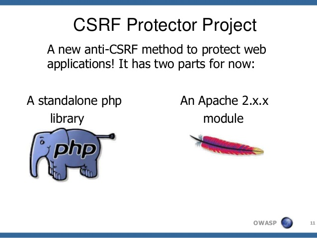

CSRF protector – Concept, Design and Future
CSRF – Cross Site Request Forgery
Cross-Site Request Forgery (CSRF) is a type of attack that occurs when a malicious Web site, email, blog, instant message, or program causes a user’s Web browser to perform an unwanted action on a trusted site for which the user is currently authenticated. The impact of a successful cross-site request forgery attack is limited to the capabilities exposed by the vulnerable application. For example, this attack could result in a transfer of funds, changing a password, or purchasing an item in the user’s context. In effect, CSRF attacks are used by an attacker to make a target system perform a function (funds Transfer, form submission etc.) via the target’s browser without knowledge of the target user, at least until the unauthorised function has been committed.
from OWASP WIKI
Introduction

CSRF has been on OWASP Top 10 for a long time, and several methods have been implemented to mitigate it. Most of the web frameworks have inbuilt methods, which can be used to make a website safe against CSRF.
However lot of web applications are still vulnerable to CSRF and its partially because developer tend to forget to implement it with every FORM or AJAX requests. And that is because the approach used for CSRF Mitigation in most of the frameworks is not centralised, we have to attach a token with every FORM we want to protect. OWASP CSRF Protector on the other hand used centralised approach, it employs javascript on client side to ensure, tokens are sent with every request sent from client, so that is correctly validated on server. This saves developer from adding a token everywhere. I’ll discuss more about the concept later in this article.
I did my Google Summer of Code in 2014 with OWASP Foundation on CSRF Protector Project, which introduced an easy way to mitigate CSRF in web application. Its based on a research paper “A Server- and Browser-Transparent CSRF Defense for Web 2.0 Applications” by Riccardo Pelizzi and R Sekar . The project was implemented in two part:
- Standalone PHP library: A super cool (easy) plug and play library for PHP projects and frameworks. Just follow these steps:
- Download the library!
- Configure it, by simply modifying the config file.
- In your code include the library:
include __DIR__ .'/path/to/library/file'; - Call the init method:
csrfprotector::init();
- Apache 2.2.x module: If you are a server administrator and wish to mitigate CSRF without changing a single line of code, simply install this apache module and you are good to go!.
Concept
The concept is pretty cool. It takes advantage of the same origin policy of the cookies, which makes sure only scripts running on the web page can access cookies associated with that domain. Now what happens is when ever a script is run, which includes the library, it validates the incoming request for CSRF Tokens. I’ll cover concept of validation later. So lets us assume the validation is successful, it starts buffering the output generated by the application and at the end, it check if its a HTML output, and on success it attaches the javascript code, and some other metadata to the output using regex replace method. A new token is generated each time its consumed, i.e. on successful validation. So this new token is stored as a list in SESSION variables, and sent to the client as cookie.
The javascript code running on the client side, creates a wrapper around the XMLHttpRequest class (used for AJAX request), defined in javascript which makes sure whenever a POST or GET request is sent the token is picked from cookie and attached with the request payload. Similarly it attaches a listener around every FORM element, and creates a wrapper around HTMLFormElement submit method. So javascript code makes sure, it attaches a token to every request that is generated from the client, that needs validation. By need validation it means, every POST request and certain GET requests which are specified in the config file of the library.
Validation
When a request is recieved, it goes through the input filter of the library and there the token sent in the payload is compared with one stored in the session variable. If successfully matched, all tokens older to that are removed from server and new token is generated. If the validation fails, one of the few actions specified (it can be changed in the config file) is taken and the event is logged.
Conclusion is, its pretty easy to use: Download, Configure, Include, Smile!
I recently implemented a lighter version of the library. and its used by todofy, . it brings certain performance improvement over the original once, but is comparatively difficult to implement. Code available open source at Github todofy/CSRF-Protector-PHP-LITE
References
- OWASP Wiki on CSRF Protector: https://www.owasp.org/index.php/CSRFProtector_Project
- Github: CSRF Protector PHP: https://github.com/mebjas/CSRF-Protector-PHP/
- Github: mod_csrfprotector: http://github.com/mebjas/mod_csrfprotector
- Research Paper: A Server- and Browser-Transparent CSRF Defense for Web 2.0 Applications
- CSRF Protector PHP Lite by todofy – https://github.com/todofy/CSRF-Protector-PHP-LITE